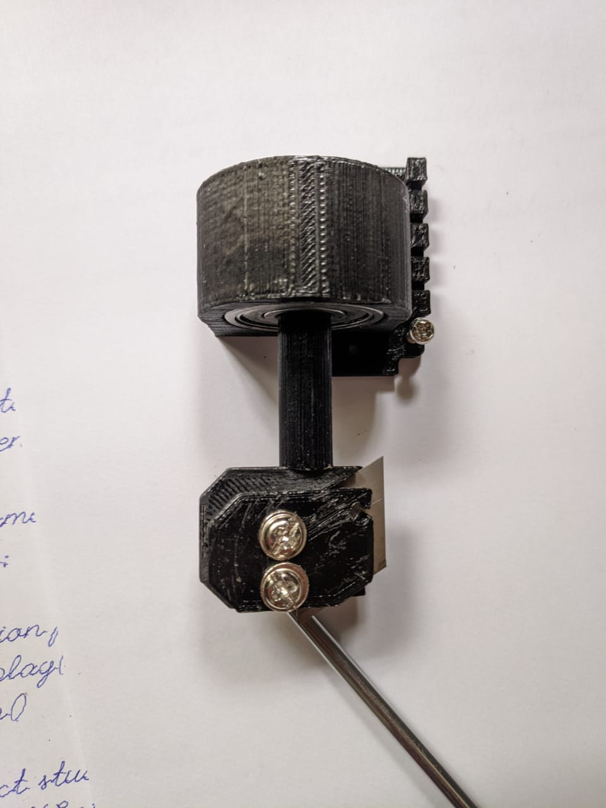
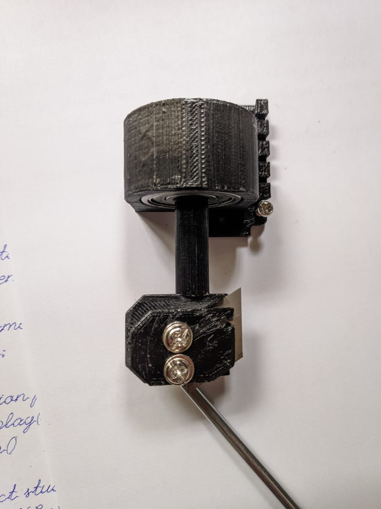

Pen Plotter
As a child I always hated writing and always dreamed about a machine that could write for me, after I got my 3D printer in 2019 I learned about things called pen plotter and discovered that at colleges I have to write too much for the sake of dumb marks. In December 2019 I finished modifying the designing of H-Bot originally made by Dr Windell Oskay from https://www.evilmadscientist.com/ I tested the concept of the gcode on my 3d printer by mounting a pen on it and surprisingly it worked very well. I wrote one of my lab observation experiments with this and went unnoticed.
Later I wanted make my dedicated pen plotter so I could start writing Lab records with it. I gathered all the parts from Koti. There are several guides on internet for free to build your own pen plotter.
Here are some example penplotter of drawings and writing done by my plotter. The first lettce is E8 is any of several closely related exceptional simple Lie groups, linear algebraic groups or Lie algebras of dimension 248


An internet meme called pepe the frog also called honker
Exciting part
Having a homework writing machine is every childs dream which I could accomplish thanks to 3D printers and generous people on internet who upload and maintian the software of these.
But this software had one major flaw that I had to fix on my own and could do it during the 2020 covid pandemic, I had digitize my own that looks like my handwriting. The available fonts that could be used for this looked like they came straight out of a printer.


I do not consider this as cheating, as I built my own tool to fix my problem. There is a massive loophole in the system, which needs to be fixed rather than calling me a cheater for cracking a loophole.
Toolchanger
Being able to use only one tool is boring so one day I was looking at other people's CNCs and found something called a drag knife during the pandemic, later after looking more I figured I could design it myself on SolidWorks. I started gathering screws, blades and an ordinary ball bearing so I could start designing it on SolidWorks.
 

The gcode needs refinement for this drag to function as intended which I will solve later in future.